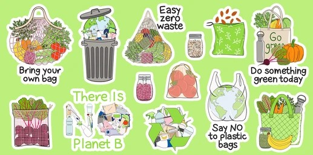

Effective Waste Management Practices
Waste management is essential for maintaining a clean and healthy environment. It involves the collection, transport, processing, recycling, and disposal of waste materials. Effective waste management helps to reduce the impact of waste on the environment, human health, and wildlife.
Types of Waste
- Household Waste: Includes everyday items like food scraps, paper, and packaging.
- Industrial Waste: Produced by factories and includes chemicals, metals, and other by-products.
- Hazardous Waste: Includes items that are dangerous or potentially harmful to the environment and human health, such as batteries and pesticides.
- Electronic Waste (e-waste): Includes discarded electronic devices like computers, TVs, and phones.
Waste Management Techniques

- Reduce: Minimize the amount of waste produced by using less and opting for reusable products.
- Reuse: Find ways to use items more than once before discarding them.
- Recycle: Convert waste materials into new products to prevent waste of potentially useful materials.
- Compost: Decompose organic waste into a nutrient-rich soil amendment.
- Energy Recovery: Convert non-recyclable waste materials into usable heat, electricity, or fuel.
- Disposal: Safely disposing of waste in landfills or through incineration when other methods are not feasible.
Benefits of Proper Waste Management
- Reduces pollution and greenhouse gas emissions.
- Conserves natural resources and energy.
- Prevents health hazards and protects public health.
- Promotes a cleaner and more sustainable environment.
- Supports economic growth through recycling and reuse industries.
How You Can Help

- Reduce your waste by buying products with minimal packaging.
- Recycle items like paper, plastic, glass, and metal.
- Compost organic waste from your kitchen and garden.
- Properly dispose of hazardous waste like batteries and electronics.
- Support policies and programs that promote sustainable waste management.
Our Activities